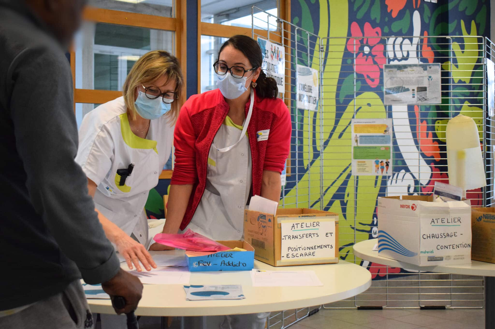
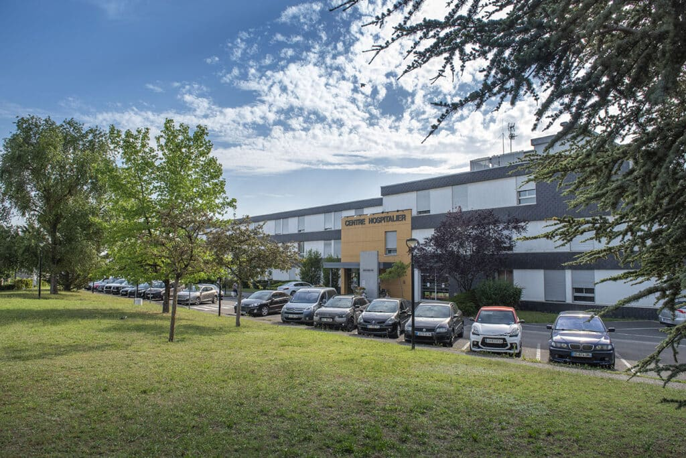
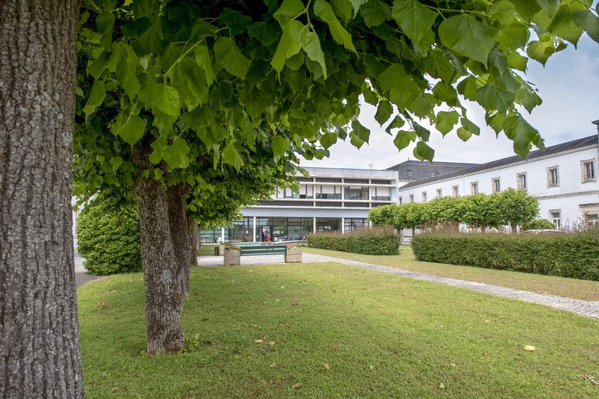

Concert de la chorale du Conservatoire d’Issoudun
La chorale variétés a donné une représentation gratuite et ouverte à tous dans la cour d’honneur, le samedi 13 juin à 15 h.
Lire l’articleHÔPITAL PUBLIC · ISSOUDUN, INDRE
Soigner, accompagner, rassurer. À Issoudun, les équipes de la Tour Blanche prennent soin de vous et de vos proches.
Un hôpital de proximité, au cœur du Berry.


Consulter un spécialiste
Les étapes et les documents utiles
Horaires et accueil des proches
Adresse, accès et plan du site
Un service, un médecin, une démarche…
NOTRE OFFRE DE SOINS
Des spécialistes et un plateau d’imagerie pour votre suivi, près de chez vous.
DécouvrirMédecine polyvalente, gériatrie, hôpital de jour : un accompagnement adapté à votre parcours.
DécouvrirDes équipes spécialisées pour retrouver de l’autonomie, à l’hôpital et au-delà.
DécouvrirEHPAD, accueil de jour et soins à domicile : des solutions pour vous et vos proches.
Découvrir
UN HÔPITAL ANCRÉ DANS SON TERRITOIRE
Au cœur du bassin d’Issoudun, le Centre Hospitalier de la Tour Blanche associe médecine, rééducation et accompagnement du grand âge.
Un établissement public à taille humaine, en lien avec les professionnels de santé du Berry et de la région Centre-Val de Loire.
Découvrir notre hôpitalLA VIE DE L’ÉTABLISSEMENT
La chorale variétés a donné une représentation gratuite et ouverte à tous dans la cour d’honneur, le samedi 13 juin à 15 h.
Lire l’articleGrâce au prêt gracieux du Département de l’Indre, les animatrices ont organisé 66 sorties en vélo adapté.
Lire l’articleLa Nouvelle République consacre une enquête à la place de l’hôpital entre Bourges et Châteauroux.
Lire l’articleBESOIN D’ÊTRE ORIENTÉ ?